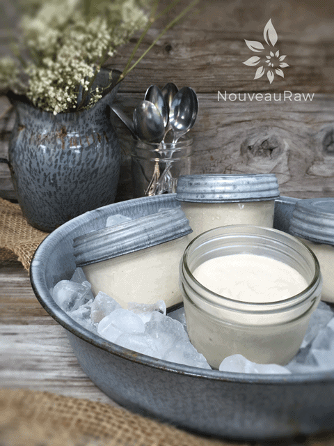
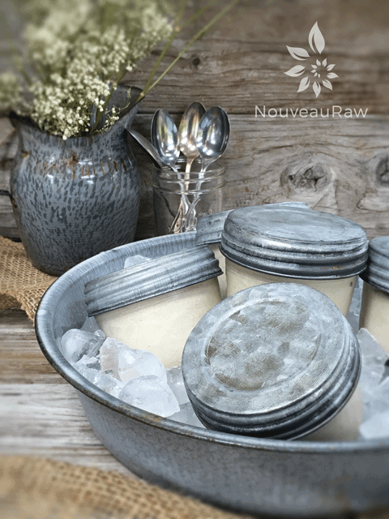

Cultured Vanilla Cinnamon Ice Cream

~ raw, vegan, gluten-free, cultured ~
This recipe is similar to frozen yogurt. When I was 14 years old, the grocery store that I worked at got a frozen yogurt machine. Even though I didn’t know a thing about how to eat healthfully, I just knew that I wanted to, and when I saw that shiny machine for the first time, I sensed that I hit the jackpot of all-things-healthy!
One day, on my lunch break, I decided to treat myself to a bowl of frozen yogurt. It was one of those self-serve machines. I slid the bowl underneath the spout and pulled the handle down. I was mesmerized…hypnotized! As though I had been temporality transported off this planet, I shook my head as I entered back into reality…
Not only had I filled the bowl to the stage of gluttony, but I had also allowed it to ooze down the edges and all over the front of the machine. Soon my glassy-eyed look turned into a look of horror. I could feel my face turning red from embarrassment as a shopper walked by.
I quickly grabbed some napkins, hoping to save face before I had to ask for a wet rag and a mop when the store manager walked by. Man, I just knew I was going to get fired for this mess or at least a “strike one”! He walked up beside me, and we both just stared at the mess. He then scratched his head and said, “Kids!” I started shaking…here it comes… fired shortly after being hired…I braced myself.) “Kids! I wish their parents would keep an eye on them. You would think that they would at least stick around to clean it up. Good job, Amie Sue, for stepping up to the plate.” He spun back on his heel and strode off.
I blinked in disbelief. I should have admitted it was me who caused the mess, but he left so quickly, far too quickly for my shocked little body to respond. I then sort of giggled to myself as I cleaned up the mess and toted my now melting bowl of frozen yogurt to the check stand to pay for it. I kind of, sort of, still feel guilty about that incident. Still, to this day, I get nervous about those machines, always fearing that they won’t turn off, and I will instantly turn into that fourteen-year-old girl with burning red cheeks.
Anyway, sorry that I got lost in that memory–I never quite know what I am going to share with you when I sit down to get these recipes ready to post! But before you go, I do want to point out that this “ice cream” dessert is one that I want you to feel good about–guilt-free, even! It is loaded with probiotics that help to populate your tummy with healthy bacteria, which aid in your overall health. I hope you enjoy the recipe. Blessings and please comment below. amie sue
Yields 2 1/2 cups
Preparation:
- In a high-powered blender, combine the cultured yogurt, coconut cream, maple syrup, vanilla, cinnamon, and salt. Blend until the filling is creamy smooth.
- Note: Vanilla bean seeds ~ slice the vanilla bean down the center of the pod. Lay the edge of the knife along the opening and scrape it from one end to the other, collecting the seeds on the knife.
- Place the blender carafe in the fridge or freezer to chill for about 1 hour.
- Pour in an ice cream machine for 20 minutes, or as instructed per unit.
- You can enjoy it right away as a soft serve or place it in a freezer-safe container and freeze until firm.
- Store leftovers in an airtight glass container in the freezer. To enjoy the leftovers (if there are any) remove them from the freezer and allow them to sit on the countertop for 15 minutes prior to serving.
Freezing Suggestions for Ice Cream:
-
Use an ice cream machine. Follow the manufactures directions.
-
Freeze in popsicle molds or 3 oz Dixie cups with a popsicle stick inserted.
-
-
Store the ice cream in the very back of the freezer, as far away from the door as possible. Every time you open your freezer door you let in warm air. Keeping ice cream way in the back and storing it beneath other frozen-sold items will help protect it from those steamy incursions.
-
Ice cream is full of fat, and even when frozen, fat has a way of soaking up flavors from the air around it—including those in your freezer. To keep your ice cream from taking on the odors, use a container with a tight-fitting lid. For extra security, place a layer of plastic wrap between your ice cream and the lid.
-
To soften in the refrigerator, transfer ice cream from the freezer to the refrigerator 20-30 minutes before using. Or let it stand at room temperature for 10-15 minutes.
-
Wish to make your own raw ice cream, wonder what machine I might recommend, and more? Click (
here) to check out the Reference Library!


© AmieSue.com